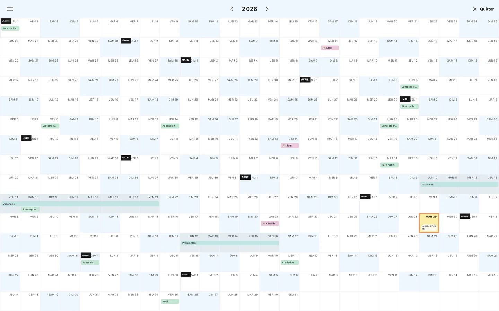
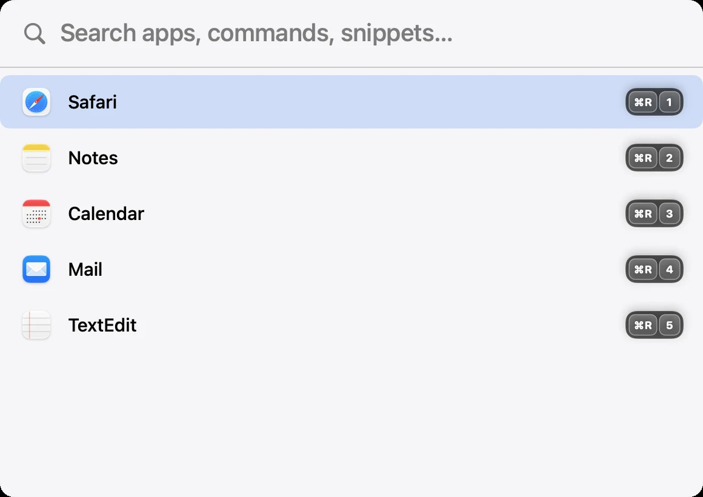
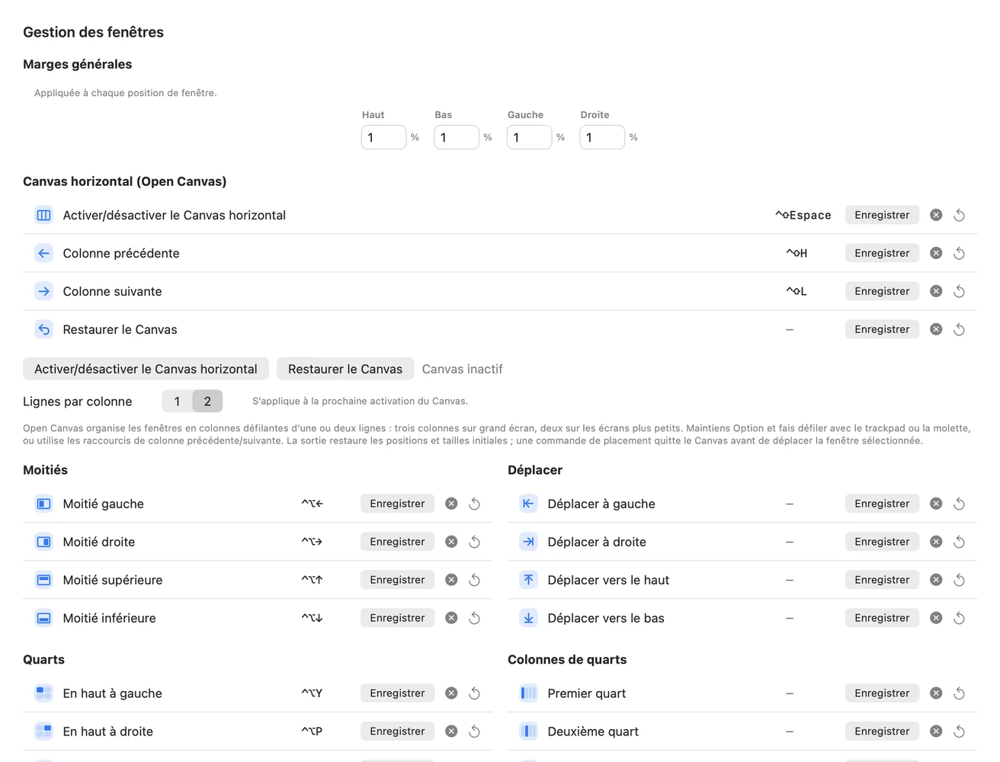
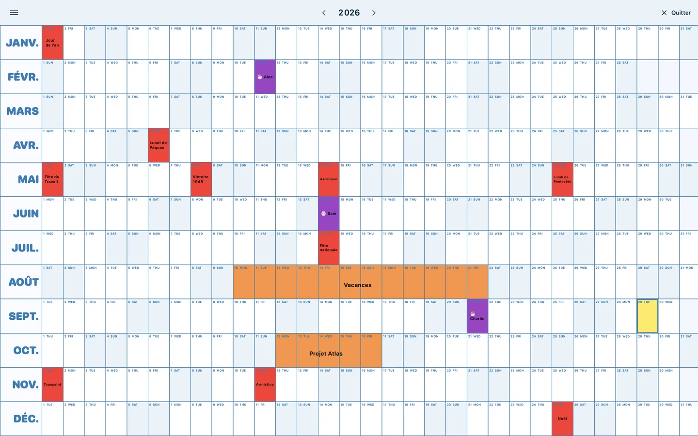

Votre clavier, vos règles.Your keyboard. Your rules.
Des raccourcis globaux par app. Même Command gauche et Command droite ont chacun leur rôle.Global shortcuts for each app. Even left Command and right Command can have different jobs.
Un peu de génie dans votre barre de menu.A little brilliance in your menu bar.
Les fenêtres à leur place. Les apps au bout des doigts.
Et de l’espace pour ce qui compte vraiment.Windows in place. Apps at your fingertips.
More room for what really matters.
Natif macOS · Open source · Sans abonnementNative macOS · Open source · No subscription


Vraies vues de l’app. Données de démonstration. Un aperçu de votre prochain bureau.Real app views. Sample data. A glimpse of your next workspace.
Moins de gestes. Plus d’élan.Fewer steps. More momentum.
Placez vos fenêtres, composez votre écran et retrouvez votre concentration.Place your windows, arrange your display and find your focus.
Gérer les fenêtresManage windows ↗Apps, scripts, liens ou calculs. Le bon outil, sans interrompre votre élan.Apps, scripts, links or calculations. The right tool, without breaking your flow.
Rencontrer le LaunchpadMeet your Launchpad ↗Toute votre année à l’écran. Les petits rendez-vous et les grands projets.Your whole year on screen. The little occasions and the big plans.
Voir plus grandSee the bigger picture ↗PLAYGROUND
Choisissez une disposition.
Regardez votre espace respirer.Choose a layout.
Give your workspace room to breathe.


À vous de jouer. Essayez les moitiés.Your turn. Try the halves.
Simulation web avec captures natives. Elle ne déplace pas les fenêtres de votre Mac. Dans l’app, les dispositions ciblent la fenêtre active ; le carrelage organise celles de l’app au premier plan.Web simulation using native captures. It does not move your Mac’s windows. In the app, layouts target the focused window; tiling arranges windows of the frontmost app.
LAUNCHPAD
Option + Espace. Quelques lettres. Entrée.
Apps, commandes et snippets se retrouvent dans un même endroit, en plein écran ou en format compact.Option + Space. A few letters. Enter.
Your apps, commands and snippets, together in one place. Fullscreen or beautifully compact.
Des raccourcis globaux par app. Même Command gauche et Command droite ont chacun leur rôle.Global shortcuts for each app. Even left Command and right Command can have different jobs.
Thèmes clair, sombre, Catppuccin ou verre. Grille par écran, tri par nom, usage ou couleur.Light, dark, Catppuccin or glass. Per-display grids. Sort by name, usage or icon color.
Un calcul à copier, un script à exécuter, un lien à ouvrir dans le bon navigateur.A calculation to copy, a script to run, a link to open in your chosen browser.
BIG YEAR
Les projets. Les anniversaires. Les jours pour soi.
Toute l’année tient dans une vue. Sans scroll.The projects. The birthdays. The days just for you.
Your entire year, in one view. No scrolling.
Capture native · Cliquez pour agrandir · Big Year conserve son interface française.Native capture · Click to enlarge · Big Year’s interface remains in French.
Les dates qui comptent.Dates that matter.Jours fériés français, vacances A/B/C, anniversaires et plages d’événements.French public holidays, school zones A/B/C, birthdays and event ranges.
Vos calendriers aussi.Your calendars, too.Événements journée entière des comptes macOS, dont Google via Calendrier.All-day events from your macOS accounts, including Google through Calendar.
Une année à vos couleurs.A year in your colors.Cinq thèmes, couleurs personnalisées et événements ajoutés d’un clic.Five themes, custom colors and events added with a click.
LE GESTE EN IMAGESSEE IT IN MOTION
Une courte boucle pour voir les dispositions en action.A short loop to see the layouts in action.
Voir le GIFView the GIF ↗Animation du playground web · 8 secondes · Sans audioAnimated web playground · 8 seconds · No audio
DANS LES DÉTAILSIN THE DETAILS
Tout ce que l’app sait faire.
Rien à deviner.Everything the app can do.
Nothing left to guess.
Moitiés, coins, tiers, deux tiers, quarts verticaux, trois quarts et sixièmes. Déplacements dans les quatre directions, centrage, taille raisonnable, agrandissement ou réduction depuis le centre. Maximisez la hauteur, la largeur ou toute la fenêtre ; activez le plein écran puis restaurez la disposition précédente.
Halves, corners, thirds, two thirds, vertical fourths, three fourths and sixths. Move in four directions, center, set a reasonable size, grow or shrink from the center. Maximize height, width or the whole window; toggle fullscreen and restore the previous placement.
Passez à l’écran suivant ou précédent. Réglez les marges générales, centrées et presque maximisées. Maximisez toutes les fenêtres visibles de tous les écrans, ou seulement celles de l’app active. Le carrelage crée une grille avec les fenêtres visibles de l’app au premier plan.
Move to the next or previous display. Customize general, centered and almost-maximized margins. Maximize visible windows across all displays or only in the active app. Tiling arranges the frontmost app’s visible windows into a grid.
Bureaux macOS (Spaces) : créez ou fermez un bureau et déplacez la fenêtre active vers le suivant ou le précédent. Fonction expérimentale fondée sur des API privées ; son comportement peut varier selon la version de macOS.
macOS desktops (Spaces): create or close a desktop, and move the active window to the next or previous one. This experimental feature relies on private APIs and may vary across macOS versions.
Voir les réglages natifsView native settings ↗Recherche immédiate, apps récentes, navigation avec les flèches et lancement avec Entrée. Ouverture par Option + Espace, coin actif configurable ou icône de barre de menu. Échap vide la recherche puis ferme le panneau. Le mode compact se déplace et mémorise sa position ; le lanceur s’ouvre sur l’écran du pointeur.
Instant search, recent apps, arrow-key navigation and Enter to launch. Open with Option + Space, a configurable hot corner or the menu bar icon. Escape clears search, then closes the panel. Compact mode can be moved and remembers its position; the launcher opens on the pointer’s display.
Grille réglable : colonnes, lignes, taille des icônes et espacements, avec profils par moniteur. Défilement vertical ou pages horizontales alignées en haut. Tri par nom, dernière utilisation ou couleur d’icône. Thèmes compact clair, sombre, Catppuccin et verre. Menu contextuel pour attribuer un raccourci ou déplacer une app autorisée vers la Corbeille.
Tune columns, rows, icon size and spacing, with per-monitor profiles. Choose vertical scrolling or top-aligned horizontal pages. Sort by name, last used or icon color. Compact themes include light, dark, Catppuccin and glass. Use the context menu to assign a shortcut or move an eligible app to the Trash.
Raccourcis globaux pour fenêtres, applications, scripts et URLs, même lorsque le Launchpad est fermé. Enregistrez les combinaisons au clavier ou choisissez les touches spéciales : Espace, Entrée, Tabulation, Supprimer et flèches. Control + Option, Control + Shift, Command, Option, Shift, Fn + Shift : les modificateurs gauche et droite peuvent être distingués pour Command, Option et Shift.
Global shortcuts for windows, apps, scripts and URLs, even with the Launchpad closed. Record combinations or select special keys: Space, Return, Tab, Delete and arrows. Control + Option, Control + Shift, Command, Option, Shift and Fn + Shift are available; left and right Command, Option and Shift can be distinguished.
Les raccourcis s’affichent sur les icônes. Modifiez-les dans les préférences ou par clic droit sur une application. Cmd + virgule ouvre les réglages.
Shortcuts appear on app icons. Edit them in preferences or by right-clicking an app. Command + comma opens settings.
Deux gestionnaires dédiés pour vos scripts exécutables et vos URLs, avec raccourcis globaux et choix du navigateur. Le snippet Archive range le Bureau en archive locale puis copie vers Google Drive en arrière-plan selon le chemin du script. DL2desk déplace Téléchargements vers le Bureau en renommant les conflits. Leurs raccourcis par défaut sont Command droite + S et Command droite + L.
Dedicated managers for executable scripts and URLs, with global shortcuts and browser selection. Archive files your Desktop locally, then copies to Google Drive in the background using the script’s configured path. DL2desk moves Downloads to the Desktop, renaming conflicts. Default shortcuts are right Command + S and right Command + L.
Raccourcis Finder vers Applications, le dossier personnel et Documents. Commandes pour vider la Corbeille via Finder et éjecter les volumes éligibles. Calculatrice intégrée au Launchpad : saisissez une expression, puis Entrée pour copier le résultat.
Finder shortcuts for Applications, Home and Documents. Commands to empty the Trash through Finder and eject eligible volumes. A built-in Launchpad calculator: type an expression and press Enter to copy the result.
Vue annuelle plein écran sans scroll, week-ends, jours fériés français, vacances scolaires des zones A/B/C et anniversaires. Ajoutez un jour ou une plage en cliquant sur la grille, ou via le texte ; les plages peuvent traverser le nouvel an. Les événements peuvent être récurrents ou datés. Un « ! » marque les événements importants en gras.
A fullscreen year without scrolling, weekends, French public holidays, school zones A/B/C and birthdays. Add a day or range by clicking the grid or entering text; ranges can span New Year. Events can recur or be year-specific. Prefix important events with “!” for bold emphasis.
Thèmes Pastel, Catppuccin Latte, Catppuccin Mocha, Dracula et Poster bleu en 12 × 31. Personnalisez les couleurs et le gras des mois ou anniversaires, avec aperçu vivant et réinitialisation. Importez les événements journée entière de Calendrier macOS via EventKit. Fermez avec le bouton, Échap ou Cmd + W.
Pastel, Catppuccin Latte, Catppuccin Mocha, Dracula and a 12 × 31 Blue Poster theme. Customize colors and bold month or birthday labels, with a live preview and reset. Import all-day events from macOS Calendar through EventKit. Close with the button, Escape or Command + W.
Préférences sauvegardées localement. Import et export JSON manuels, sauvegardes automatiques horodatées à chaque modification vers le dossier de votre choix. Interface disponible en français, anglais, allemand et espagnol ; Big Year conserve des libellés français.
Preferences saved locally. Manual JSON import and export, plus automatic timestamped backups on changes to your chosen folder. The interface supports French, English, German and Spanish; Big Year retains French labels.
Indicateur d’autorisation Accessibilité et accès aux réglages macOS. L’app utilise l’Accessibilité pour les fenêtres et raccourcis, l’automatisation Finder pour certaines commandes et l’accès Calendrier si vous activez l’import.
An Accessibility status indicator links to macOS settings. The app uses Accessibility for windows and shortcuts, Finder automation for certain commands, and Calendar access if you enable importing.
FAITES DE LA PLACE À VOS IDÉES.MAKE ROOM FOR YOUR IDEAS.
Un téléchargement. De nouvelles habitudes.One download. A better everyday.
Télécharger pour MacDownload for MacDernière Stable publiée · macOS 13+ · Apple Silicon · v2026.10.49Latest published Stable · macOS 13+ · Apple Silicon · v2026.10.49
Build local signé pour le développement, sans garantie de notarisation : au premier lancement, un clic droit → Ouvrir peut être nécessaire sur un autre Mac. L’empreinte SHA-256 figure sur la page de la release.Local development-signed build with no notarization guarantee: on first launch, a Control-click → Open may be required on another Mac. The SHA-256 digest is listed on the release page.
Glissez l’app dans Applications, puis ouvrez-la.Move the app to Applications, then open it.
Activez l’Accessibilité dans Confidentialité et sécurité.Enable Accessibility in Privacy & Security.
Option + Espace. Votre Launchpad vous attend.Option + Space. Your Launchpad is ready.
Si l’app vous facilite la vie, un café aide à écrire la suite.If the app makes your day easier, a coffee helps write the next chapter.